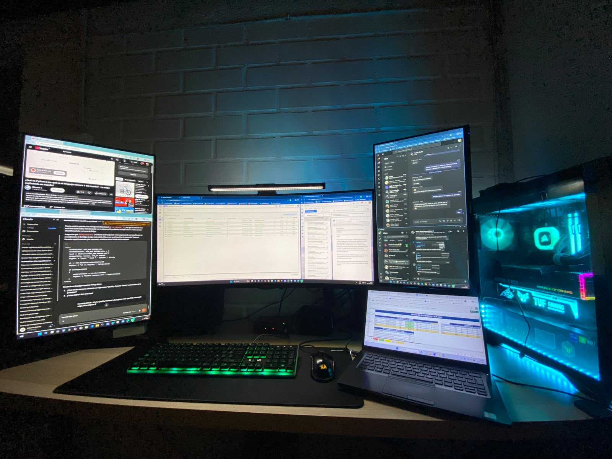

Analizar. Automatizar. Mejorar.
Una combinación de análisis de datos, Business Intelligence y automatización enfocada en resolver problemas reales de negocio.
Mi experiencia.
Mi experiencia combina análisis de datos, construcción de dashboards, automatización de procesos y control de calidad.
Trabajo principalmente con Power BI, Excel, Power Query, DAX, Power Automate, SharePoint y Power Apps.
Actualmente desarrollo soluciones para procesos de control y calidad de datos, trabajando con grandes volúmenes de información provenientes de operaciones de auditoría en terreno.
Uno de los principales focos de mi trabajo ha sido transformar tareas repetitivas en procesos automatizados, reduciendo el trabajo manual y mejorando la velocidad y confiabilidad de los controles.
También tengo experiencia utilizando AutoHotkey para automatizar tareas de escritorio, además de trabajar con SharePoint y Power Platform para integrar información y construir soluciones orientadas al negocio.

Entorno de trabajo · Data Analytics · BI · Automation450K+
Registros procesados semanalmente.
26
Tablas integradas en modelos de datos.
BI
Análisis, visualización y control operacional.
AUTO
Automatización de procesos repetitivos.
Cómo trabajo.
El objetivo no es utilizar una herramienta por utilizarla, sino encontrar la solución adecuada para cada problema.
Mi enfoque parte desde el problema de negocio y no desde la herramienta. Primero busco entender el proceso, identificar dónde se genera trabajo manual o riesgo de error y luego diseñar una solución que permita automatizar, controlar y visualizar la información.
Me interesa especialmente conectar distintas herramientas para crear flujos completos: desde la captura y consolidación de datos hasta el análisis, visualización, generación de alertas y seguimiento de resultados.
Analizar
Entender el proceso y detectar oportunidades de mejora.
Estructurar
Organizar y preparar los datos para su análisis.
Automatizar
Reducir tareas manuales y puntos de error.
Visualizar
Convertir los datos en información útil para controlar y decidir.
Mi ecosistema de trabajo.
Un conjunto de herramientas que utilizo para conectar datos, análisis, automatización y procesos de negocio.